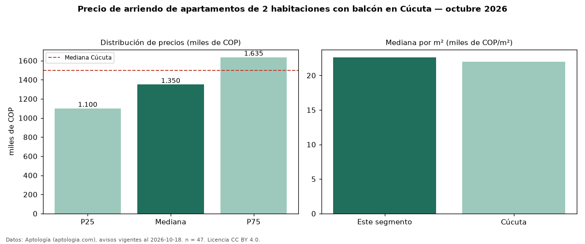

Precio de arriendo de apartamentos de 2 habitaciones con balcón en Cúcuta — octubre 2026
En Cúcuta, la mediana de canon mensual de apartamentos de 2 habitaciones con balcón es COP 1,35 millones, según 47 avisos vigentes. Frente a la mediana de los apartamentos de 2 habitaciones en arriendo de Cúcuta (COP 1,30 millones, n = 108), queda 4 % por encima; este segmento reúne el 44 % de esos avisos. Por metro cuadrado, la mediana es COP 22.628/m² al mes (n = 38), 0 % por encima de los apartamentos de 2 habitaciones en arriendo de Cúcuta (COP 22.534/m²). El área mediana anunciada es 60 m². La administración mediana declarada es COP 333.000 al mes (n = 27), aparte del canon. El estrato más frecuente es 3 (51 % de los avisos con estrato). La mediana de todos los apartamentos en arriendo de Cúcuta es COP 1,50 millones (−10 % de diferencia). La mitad central de los avisos va de COP 1,10 millones a COP 1,64 millones (razón 1,5), una dispersión moderada. Datos: Aptología (aptologia.com), CC BY 4.0 — https://www.aptologia.com/arriendo/cucuta. Archivos: PDF, CSV con las cifras y gráfica PNG.

| Avisos únicos | 47 |
|---|---|
| Percentil 25 | COP 1.100.000 |
| Mediana | COP 1.350.000 |
| Percentil 75 | COP 1.635.000 |
| Mediana por m² | COP 22.627 |
Fuente: avisos vigentes de portales inmobiliarios recopilados por Aptología, deduplicados (mínimo 30 avisos únicos por celda). Precios pedidos, no cerrados. Fecha: 2026-10-18.